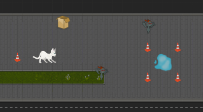
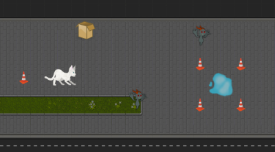

Projects


Queen is a clicker-game coded with HTML, CSS, and
JavaScript for my Web Design and Implementation class. The game is
based on timing and simple interactivity and encourages the player
to build an army of parasitic monsters.
View Project
 

Shiro was a group project in my class Game Design and
Algorithmic Problem-Solving II. I and four other teammates designed and
coded a rythm-based role-playing game using C# and the Microsoft
XNA graphics framework.
View Project (currently unavailable online)
Shell Sweet Shell is a game I worked on for Global
Game Jam 2019. I worked with a group of three other teammates, including
an eight-year-old artist, to design, code, and test this Unity project
in under 48 hours.
View Project
Mono Mapper is a work-in-progress application that
utilizes Windows Forms as a framework for a general-purpose level editor.
Mono Mapper started as a level editor for Shiro, but I am currently working
to expand the project and make it public.
View Project